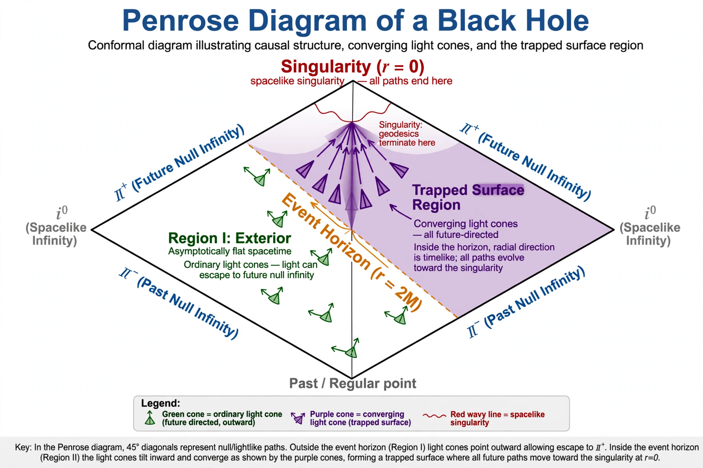

| Singularity theorems | |
|---|---|
| Field | General relativity, mathematical physics |
| Key results | Penrose (1965); Hawking & Penrose (1970) |
| Proponents | Roger Penrose, Stephen Hawking |
| Conclusion | Spacetimes satisfying suitable energy and causality conditions are geodesically incomplete |

The Penrose–Hawking singularity theorems are a set of results in general relativity which attempt to answer the question of when gravitation produces singularities. Rather than pinpointing a singularity directly, the theorems prove geodesic incompleteness — the existence of paths through spacetime that cannot be extended beyond a finite length — under broad physical conditions, without assuming any symmetry.
In 1965 Roger Penrose proved the first modern singularity theorem, introducing the concept of a trapped surface: a closed two-dimensional surface from which even outward-directed light rays converge. He showed that if a spacetime contains a trapped surface and satisfies the null energy condition, it must contain incomplete null geodesics — applying directly to gravitational collapse and black holes. Stephen Hawking adapted the ideas to cosmology, showing that an expanding universe satisfying the strong energy condition must have begun in a singularity — providing rigorous support for the Big Bang. The combined Hawking–Penrose theorem of 1970 unified these results.
The theorems typically require (i) an energy condition ensuring gravity is attractive, (ii) a causality condition ruling out closed timelike curves, and (iii) a trapping or initial-expansion condition. Their conclusion signals the breakdown of classical general relativity rather than a physical infinity: near the predicted singularity a theory of quantum gravity is expected to take over. Penrose received the 2020 Nobel Prize in Physics in part for the discovery that black hole formation is a robust prediction of general relativity.